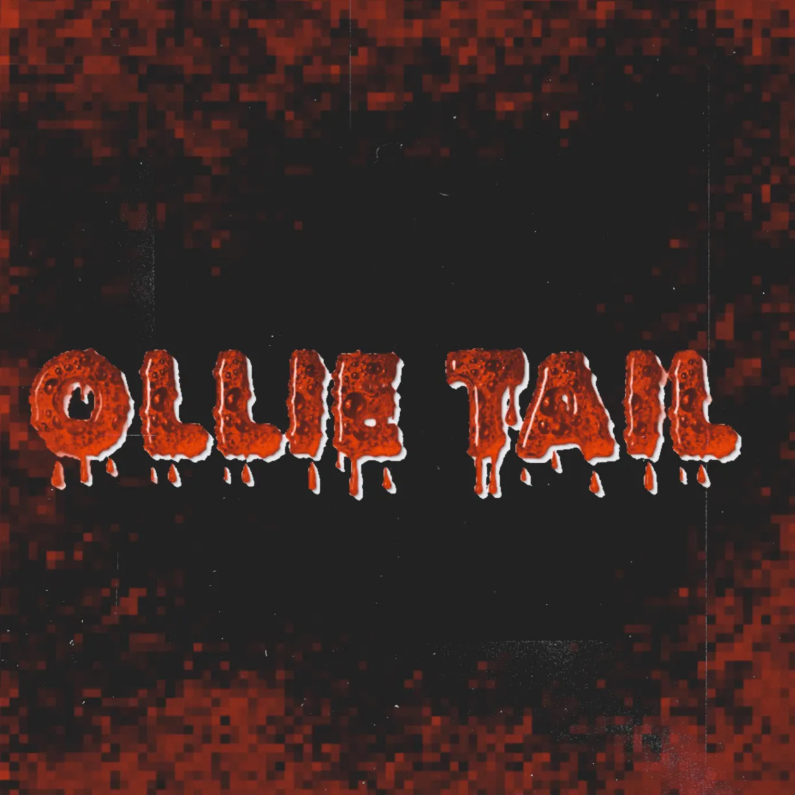

ARTISTS

Necrotic Desires
Genres: Grindcore
Necrotic Desires is a two piece grindcore band from Northern Michigan taking inspiration from bands like Combatwoundedveteran, Discordance Axis, and more recently Car Bomb. They're not exactly known for taking the band seriously though, with titles like Obligatory Structured Song, their logo being a dead bush put over text, and merch like repainted graphing calculators.
Discography:
- Demo '25 (2025)
- A For Anal (2025)
- This Is The Improvised Explosive Device Dot Com! (2025)
- A For Anal X This Is The Improvised Explosive Device Dot Com! (2025)

Ollie Tail
Genres: Hardcore Punk
Ollie Tail is an artist born in Atlanta, Georgia. He started making music with his first band Combat 9 and later moved on to other projects like Cheap Roses, The Static Wires, Las Coop Agaric, and Twist 88. Check out his page: ollietail77.neocities.com.
Discography:
- Unreleased Tracks (2025)
- Late Again I See (2025)
- Gone For Good (2025)
- 2 Songs (2025)
- Crow Call (2025)
- Good Demos (2025)
- Ollie Tail (2025)
- Her Demo (2025)
- Punch Ya In Yr Face (2025)